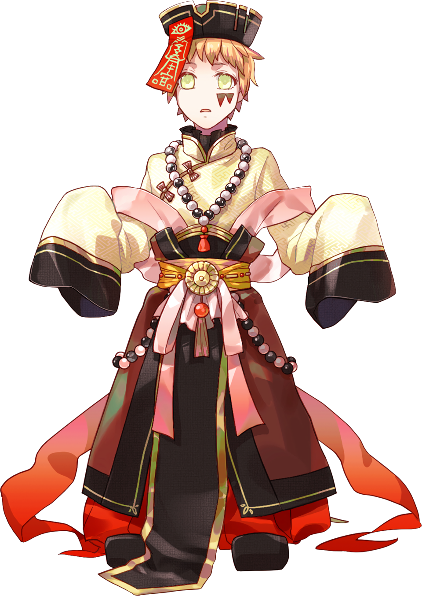
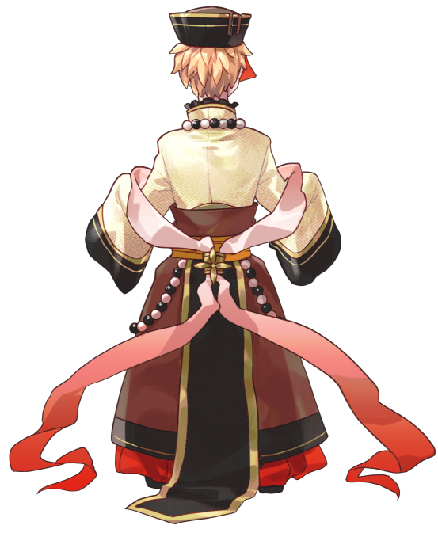

「……ずっと、この日を
……夢に視ていた」
| 年齢 | 見た目の年齢は9歳（推定750歳） |
|---|---|
| 誕生日 | ？ |
| 立場 | 中華街の土地神 |
| 身長 | 112cm |
| 出身 | 横浜中華街 |
| 特技 | 千里眼・式神を操る |
| 家族構成 | 両親・兄・双子の妹がいたが既に老衰 |
| イメージカラー | 嫩黄色（どんこうしょく） |
中華街の土地神。
未来の中華街で出会うが、
めぐみ達がいた600年前の現代の横浜にも存在していた。
目はほとんどみえていないため、式神の目を借りて横浜を見守っている。
もとは人間であったが、
土地神の力が宿っていると知れた際に
変若水を飲まされて不老不死になった。
やがて永らく生きているうちに神力を手に入れた。